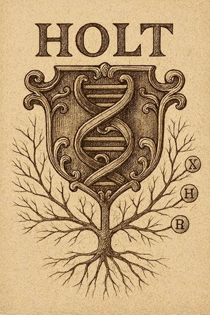
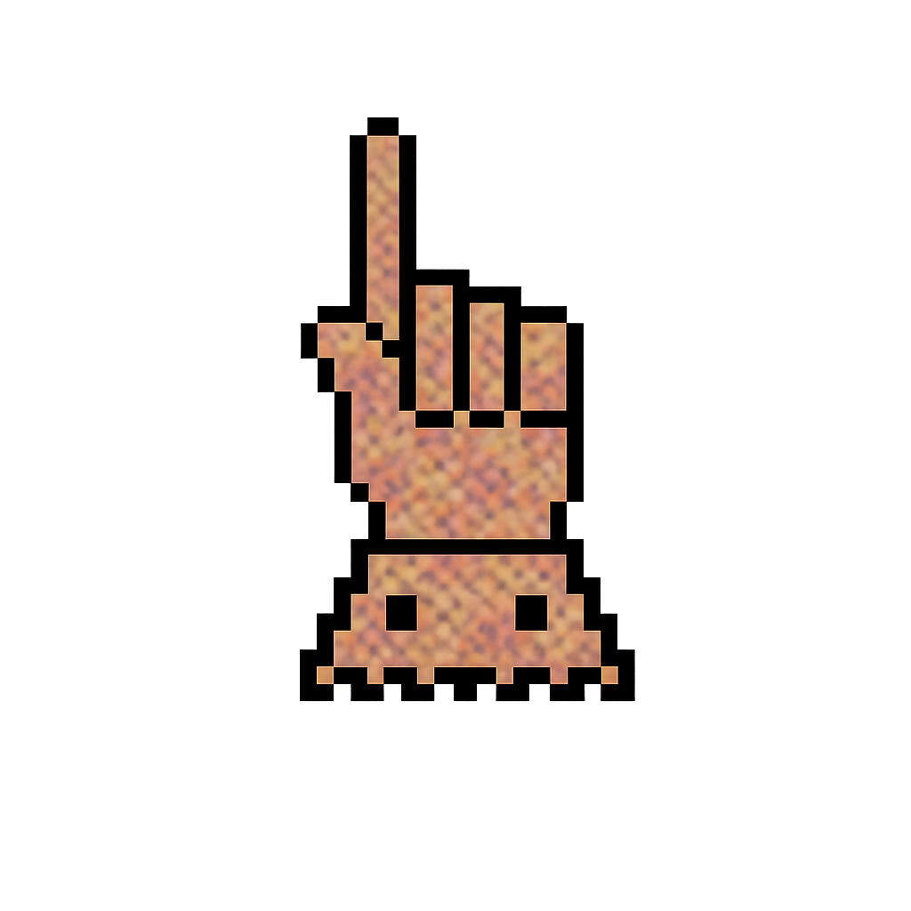

DNA and Ancestral Connections

Genetic testing can help reconnect branches of a family that have become separated through time, geography, or gaps in the historical record. When the paper trail runs cold, DNA can often reveal relationships and origins that would otherwise remain hidden.
Mitochondrial DNA (mtDNA) traces the ancient maternal line, passed unchanged from mother to child. This is the lineage behind Bryan Sykes’ well‑known “Seven Daughters of Eve,” showing that most Europeans descend from a small number of maternal ancestors who lived tens of thousands of years ago.
Y‑DNA follows the direct paternal line, inherited from father to son. Modern tests, including high‑resolution Y‑700 analysis, can identify shared male ancestors, distinguish between branches of a surname, and place families within wider haplogroups stretching back thousands of years.
Together, these tools can provide powerful evidence for linking Holt families, confirming lineages, and understanding how different branches fit into the broader story of the surname. Some DNA testing results for Holt can be found here.
Collateral and Cadet Lines
Understanding collateral and cadet lines helps place DNA results in their proper genealogical context. Collateral lines branch from the siblings of your direct ancestors and often preserve clues when the main line becomes unclear (thus could be your Great-uncle’s line, 2nd great-aunt’s descendants etc.). Cadet lines arise from younger sons who established junior branches of the family, creating distinct but related offshoots. The term comes from French “cadet” (younger son) and is commonly used in noble or armigerous families, but the concept applies more broadly. Cadet lines often developed their own identities, sometimes adopting slightly different spellings, arms (with a mark of cadency), or migrating to new areas. These side‑branches can be essential when interpreting Y‑DNA matches or identifying how different Holt families connect. Together, they help map the wider Holt kinship network and show how different branches share a common origin.
Haplogroups
DNA testing also assigns each person to a haplogroup, a genetic clan that traces back to a shared ancestor thousands of years ago. mtDNA haplogroups follow the maternal line, while Y‑DNA haplogroups trace the paternal line. These groups reveal deep ancestral origins, migration patterns, and the ancient roots of a surname. High‑resolution tests such as Y‑700 can place individuals within very specific sub‑branches, helping to distinguish between Holt lines and identify where different branches share a common forebear.
DNA research is a bit like a high-tech puzzle, and for the surname Holt, there are some very clear patterns, though it depends on which branch of the tree you belong to. As surnames are traditionally passed from father to son, researchers focus on the Y-DNA haplogroup. Because Holt is a topographic surname (meaning it describes where someone lived—near a grove of trees), the name cropped up independently in many different places. This means not all Holts are related to each other. Here is the breakdown of the main lineages associated with the Holt .
The vast majority of Holts with British or Western European roots fall under R1b (specifically R-M269). This is the most common lineage in Western Europe. Its origin is often linked to the expansion of Italo-Celtic or Germanic speakers. The "Holt" Connection is that many Holt families trace back to Lancashire, Cheshire, and Yorkshire in England. Most of these lineages are R1b.
A significant number of Holts belong to Haplogroup I1 (specifically I-M253). Its origin is a "Scandinavian" marker. It’s very common in Norway, Sweden, and Denmark. The "Holt" Connection given is that "Holt" is an Old English and Old Norse word for "wood" or "grove," it’s no surprise that many people with this name have Viking Age ancestors who settled in the Danelaw regions of England.
While less common than R1b, some Holt branches carry the R1a marker. Its origin is often associated with Proto-Indo-European expansions or, in the context of England, more Scandinavian (Norwegian) influence.
Haplogroup Genetic Distance
Sharing the same haplogroup means that two people descend from an ancient paternal
or maternal line. However, a haplogroup on its own cannot tell us how closely two
individuals are related. To understand that, we look at the number of steps away, small
differences in the STR markers (Short Tandem Repeats) within the haplogroup.
Each step represents a mutation that has occurred somewhere along the line of descent. A fewer steps away usually indicates
a more recent shared ancestor and more steps away suggests the common ancestor lies much further back in time. In other words,
two people can belong to the same haplogroup yet still be separated by many generations. Haplogroups
show the broad branch of the human family tree; the steps-away, genetic distance, measure helps pinpoint
how close the twigs are to each other. A step is simply one mutation difference between two test results.
A rough interpretation could be:
- 0–1 steps → often indicates a shared ancestor within a genealogical timeframe (sometimes within a few hundred years)
- 2–4 steps → shared ancestor may be several hundred to a thousand years back
- 5+ steps → shared ancestor is usually deep ancestry, well before surnames
- 7 steps → typically many hundreds or even thousands of years before a surname existed
These are broad statistical ranges, not precise generation counts. Two men who are 1 step apart might share an ancestor 5 generations back or 15. It depends on which markers mutated and how fast those particular markers tend to change.
Richard III: Discovery and identification shows Frances HOLT DNA connection to Anne of York
No descendants of Richard III survive to present day. Modern day Maternal line from Anne of York. Anne of York was Richard III's eldest sister (born in 1439). She was married to the Duke of Exeter and her bloodline was notably used in 2012 to help identify Richard III's excavated remains through mitochondrial DNA. These two women were connected to the Holt family. Dorothy GRANTHAM was baptised at Woolley on 28 April 1659 the daughter of Thomas GRANTHAM and Frances (née WENTWORTH). She married James HOLT of Castleton, near Rochdale, Lancashire, MP, on 24 February 1679 and died in 1717. Woolley parish register. A.R.Maddison, Lincolnshire Pedigree, vol. 2, p.423. B. Hennig, (ed.) History of Parliament. The Commons 1660-1690, (1983), vol. 2, pp. 571-2. Deed of 1698, Lincoln Record Office, Tur/11/1/6/4. Frances was baptised at Rochdale on 28 March 1681 the daughter of James HOLT and Dorothy (née GRANTHAM). She was married in c. 1701 to James WINSTANLEY (who was MP for Braunstone, Leicestershire between 1701- 19) and died 1771. Maddison, Lincolnshire Pedigree, vol. 2, p.423. Hennig, The Commons 1690- 1715, (2002), vol. 5, p.903. Burke, A Genealogical and Heraldic History of the Commoners, vol. 1, p.364. Rochdale parish register. Richard III research Tracing relatives of Richard III research: none survive to the present day.
